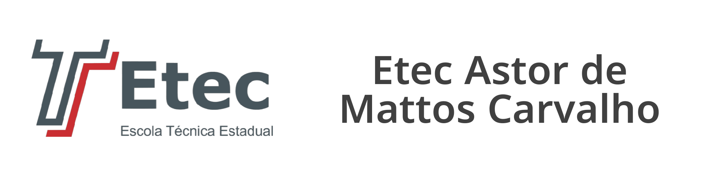

|  |

Química
| A matemática é utilizada para a base de cálculos. A físico-química também é uma disciplina importante no curso. O aluno aprenderá a manipular instrumentos como microscópio, balança analítica e outros equipamentos voltados a análises químicas. Outro ponto importante é o entendimento sobre a tecnologia de processos industriais, onde os alunos aprendem a transformação química e a evolução da matéria-prima até o produto final. |
| Carga Horária | Duração/Semestre | Tipo de curso |
|---|---|---|
| 1200 hrs | 3 semestres | M-Tec |
Área de Atuação
| Pode atuar em diversas áreas como analista ou supervisor de processos. Ele analisa a qualidade e a pureza da matéria-prima que chega na empresa. Também pode desenvolver produtos e trabalhar com controle de qualidade nos processos químicos. |
Onde Trabalhar
| Indústria química, setor alimentício, área agrícola, vendas e assistência técnica. |
Desenvovido por Guilherme
© 2023 - Etec Astor de Mattos Carvalho